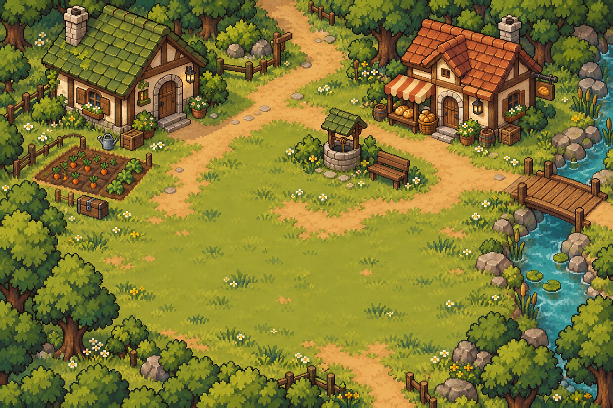

Leave room for your village
A few old landmarks give the kingdom its history. Where the new homes, gardens and gathering places go is your choice.

One continuous village, shaped by you. Footpaths lead to the woods and hills; front doors lead into homes worth visiting.
A few old landmarks give the kingdom its history. Where the new homes, gardens and gathering places go is your choice.
Quiet parchment panels, clear text and a handful of useful tools. Your journal is there when you need a nudge.
The approved portraits stay. Expressions follow the conversation; friendship shows up in everyday village life.
This is an interactive art and UI proposal. The scenery is a concept image, not a walkable map or finished tile set. Try the map, bag, bakery conversation and building preview. Nothing here touches your game save.
Read the map and UI design brief →